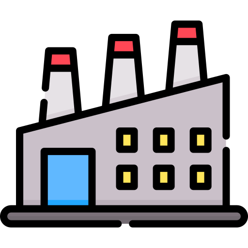
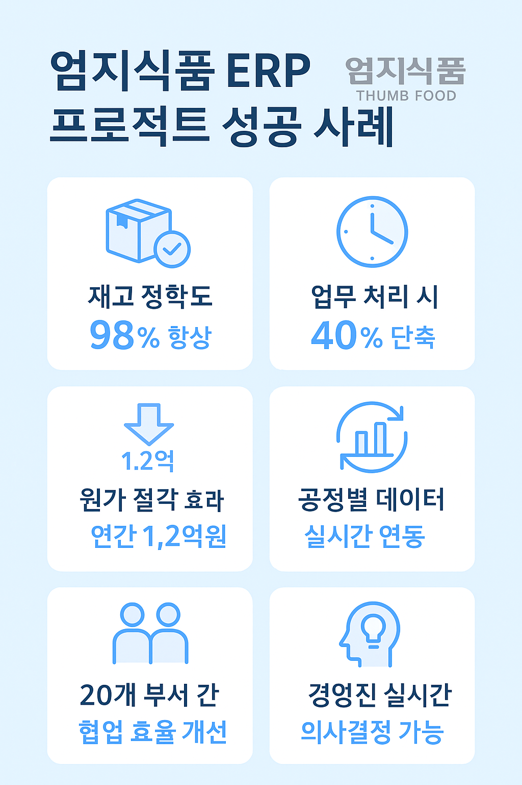
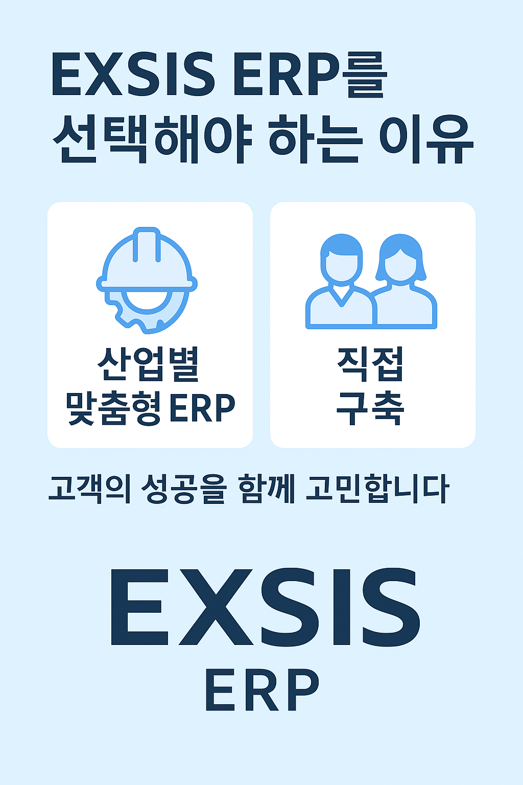

ERP란 무엇인가?
ERP(전사적 자원관리)는 회계, 인사, 영업, 구매, 생산 등 기업 활동을 하나의 시스템으로 통합하여 효율성과 투명성을 극대화하는 솔루션입니다.
재무·회계
통합 회계관리로 투명한 재무 흐름 제공

생산·자재
실시간 자재 흐름 및 생산 계획 통합 관리
인사·급여
직원 관리부터 급여·평가까지 통합 시스템
CRM·영업
고객 데이터를 통한 맞춤형 영업 지원
PMS
PMS지원
주요 서비스
-
영림원 ERP 시스템 구축 및 커스터마이징
기업별 업무 프로세스에 최적화된 ERP 설계 및 개발 -
다우오피스 그룹웨어 솔루션 도입 및 통합
협업 효율 증대를 위한 그룹웨어 도입 및 기존 시스템 연동 -
ERP와 그룹웨어 연동 솔루션 제공
업무 연계성 강화로 생산성 향상 지원 -
MES(Manufacturing Execution System)와 ERP 연동
제조 현장 데이터와 ERP의 실시간 통합 관리 -
시스템 운영 및 유지보수, 기술 지원
신속한 장애 대응과 안정적 시스템 운영을 위한 지속 지원
고객사 도입 효과

- 생산성 향상 – 수작업 제거 및 업무 표준화
- 비용 절감 – 원가 파악 및 불필요한 재고 감축
- 실시간 의사결정 – 데이터를 통한 경영 판단
고객사 도입 효과
